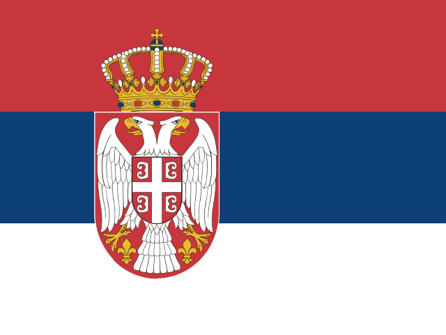
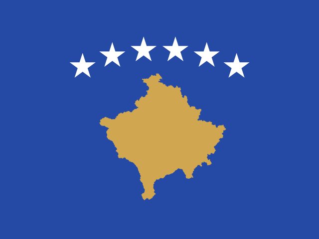
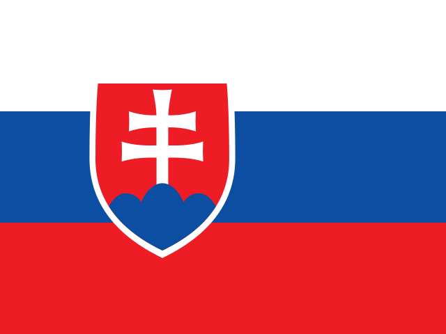

ナポリの最新スカッドとスタメン作成【2026-27】
ホイルンを完全移籍で確保。デ・ブライネとマクトミネイが中盤を司るナポリ。 下のスカッド一覧を眺めたら、Squad XI（スカッドイレブン）でナポリのスタメンを実際に組んで、画像でSNSに共有できます。クラブを選ぶだけで自動編成もできます。
ナポリのスタメンを作る（無料・登録不要）→ナポリ 登録スカッド（全27人）
| ポジション | 選手 | 年齢 | 国籍 |
|---|---|---|---|
| GK | Mathias Ferrante | 19 | |
| GK | Alex Meret | 29 | |
| GK | Vanja Milinković-Savić | 29 |  SRB |
| GK | Nikita Contini | 30 | |
| CB | Alessandro Buongiorno | 27 | |
| CB | Sam Beukema | 27 | |
| CB | Amir Rrahmani | 32 |  KVX |
| CB | Juan Jesus | 35 | |
| LB | Miguel Gutiérrez | 24 | |
| LB | Mathías Olivera | 28 | |
| LB | Leonardo Spinazzola | 33 | |
| RB | Pasquale Mazzocchi | 30 | |
| RB | Giovanni Di Lorenzo | 32 | |
| 守備的MF | Billy Gilmour | 25 | |
| 守備的MF | Stanislav Lobotka | 31 |  SVK |
| MF | Scott McTominay | 29 | |
| MF | Frank Anguissa | 30 | |
| 攻撃的MF | Antonio Vergara | 23 | |
| 攻撃的MF | Eljif Elmas | 26 | |
| 攻撃的MF | Kevin De Bruyne | 34 | |
| 左WG | Alisson Santos | 23 | |
| 右WG | David Neres | 29 | |
| 右WG | Matteo Politano | 32 | |
| CF/ST | Giovane | 22 | |
| CF/ST | Rasmus Højlund | 23 | |
| CF/ST | Lorenzo Lucca | 25 | |
| CF/ST | Romelu Lukaku | 33 |
※Squad XI収録データ（2026年夏の主要移籍を反映）に基づく参考情報です。公式のクラブ登録リストとは異なる場合があります。
このスカッドで遊ぶ
Squad XIでクラブ検索から「Napoli」を選ぶと、市場価値ベースのベストイレブンが自動で並びます。そこから18種類のフォーメーションに組み替えたり、控え中心の「セカンドXI」や、W杯ベストイレブンとの比較画像を作るのもおすすめです。